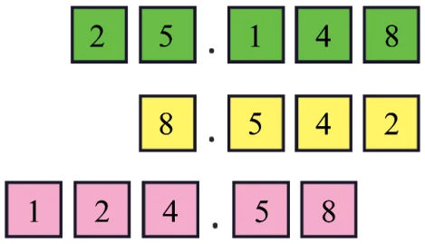
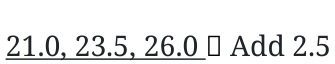
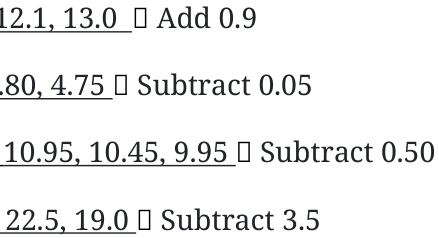

Page No. 73
Which decimal number is greater?
- (a)1.23 or 1.32 (b) 3.81 or 13.800 (c) 1.009 or 1.090
Ans:
- (a)1.32 is larger.
- (b)13.800 is larger.
- (c)1.090 is larger.
Consider the decimal numbers 0.9, 1.1, 1.01 and 1.11 Which of the above is closest to 1.09?
Ans: 1.1 is closest to 1.09.
Which among these is closest to 4: 3.56, 3.65, 3.099?
Ans: 3.65 is closest to 4.
Which among these is closest to 1: 0.8, 0.69, 1.08?
Ans: 1.08 is closest to 1.
In each case below use the digits 4, 1, 8, 2, and 5 exactly once and try to make a decimal number as close as possible to 25.
Ans:

Page No. 75 Figure it Out
- 1.Find the sums
- (a)\(5.3 + 2.6\) (b) \(18 + 8.8\)
- (c)\(2.15 + 5.26\) (d) \(9.01 + 9.10\)
- (e)\(29.19 + 9.91\) (f) \(0.934 + 0.6\)
- (g)\(0.75 + 0.03\) (h) \(6.236 + 0.487\)
Ans:
- (a)7.9 (b) 26.8
- (c)7.41 (d) 18.11
- (e)39.10 (f) 1.534
- (g)0.78 (h) 6.723
- 2.Find the differences
- (a)\(5.6 - 2.3\) (b) \(18 - 8.8\)
- (c)\(10.4 - 4.5\) (d) \(17 - 16.198\)
- (e)\(17 - 0.05\) (f) \(34.505 - 18.1\)
- (g)\(9.9 - 9.09\) (h) \(6.236 - 0.487\)
Ans:
- (a)3.3 (b) 9.2
- (c)5.9 (d) 0.802
- (e)16.95 (f) 16.405
- (g)0.81 (h) 5.749
Continue this sequence 4.4, 4.8. 5.2, 5.6, 6.0, … and write the next 3 terms.
Ans: 4.4, 4.8. 5.2, 5.6, 6.0, 6.4, 6.8, 7.2
Page No. 76
Similarly, identify the change and write the next 3 terms for each sequence given below. Try to do this computation mentally.
- (a)4.4, 4.45, 4.5, … (b) 25.75, 26.25, 26.75, …
- (c)10.56, 10.67, 10.78, … (d) 13.5, 16, 18.5, …
- (e)8.5, 9.4, 10.3, … (f) 5, 4.95, 4.90, …
- (g)12.45, 11.95, 11.45, … (h) 36.5, 33, 29.5, …
Ans:
- (a)4.4, 4.45, 4.5,4.55, 4.6, \(4.65 \to\) increment of \(+ 0.05\)
- (b)25.75, 26.25, 26.75, 27.25, 27.75, \(28.25 \to\) add 0.5
- (c)10.56, 10.67, 10.78,

- (d)13.5, 16, 18.5,
- (e)8.5, 9.4, 10.3,

- (f)5, 4.95, 4.90,
- (g)12.45, 11.95, 11.45,
- (h)36.5, 33, 29.5,
Page No. 78